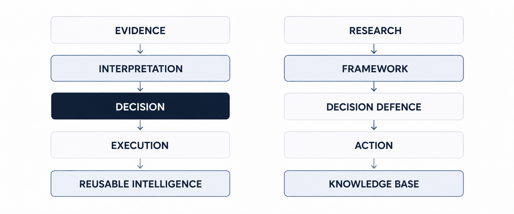
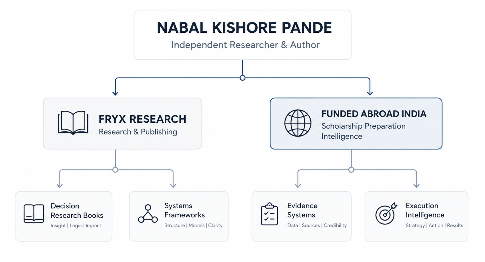

Core domain
Decision Systems
Systems for making evidence, interpretation, uncertainty, risk and execution visible before important decisions are made.
Explore Decision SystemsIndependent Researcher & Author
Decision Systems · Research Frameworks · Execution Intelligence · Scholarship Preparation Intelligence
I build practical decision infrastructure where evidence, research and execution need to work together.
My work develops research, books, frameworks, operating systems, datasets and preparation tools for people working through complex academic, professional and international decisions.

Research & Publishing Identity
The work connects decision quality, research production, execution and scholarship preparation through reusable frameworks and open research infrastructure.
Core domain
Systems for making evidence, interpretation, uncertainty, risk and execution visible before important decisions are made.
Explore Decision SystemsResearch domain
Structured approaches for turning research questions, evidence and analysis into reusable intellectual assets.
Explore ResearchApplied domain
A preparation approach that treats international scholarship applications as a decision problem rather than simply an opportunity-search problem.
Explore Scholarship IntelligenceWork Architecture
The projects are different applications of a common concern: improving decisions through better evidence, reasoning and execution.
Establish what is known, what is supported, what is uncertain and what still requires investigation.
Examine what available evidence means before converting information into conclusions.
Determine which options deserve time, resources, preparation or further investigation.
Convert decisions into controlled next actions under explicit conditions.
Capture the reasoning, framework and evidence so valuable work can be reused instead of repeatedly reconstructed from zero.
The objective is not information accumulation. It is the development of reusable decision infrastructure.
Funded Abroad India · Abroad & Ahead
Evidence before assumption. Decisions before effort.
Scholarship Preparation Intelligence is the specialised scholarship research and preparation layer within the broader Abroad & Ahead research and publishing identity.
The approach brings eligibility, readiness, evidence, fit, opportunity value, selection and execution into one preparation logic.
Determine whether the opportunity, applicant profile and preparation state are sufficiently aligned.
Strengthen the evidence, documentation and preparation that materially affect the application.
Prioritise opportunities according to fit, feasibility and preparation cost.
Move from preparation to a controlled application process.

Free resource
An entry resource for evidence-based scholarship preparation and understanding preparation before opportunity hunting.
Access the Compass
Preparation system
A structured preparation system for applicants pursuing fully funded Master's scholarships.
Examine the BlueprintResearch platform
An expanding platform for scholarship research, frameworks, guides, tools, templates, datasets and implementation resources.
Explore Funded Abroad IndiaDecision Systems
Information becomes useful when it can support a defensible decision.


Decision Defence System
A framework for examining assumptions, evidence, risk and defensibility before committing to action.
Explore the Playbook
Research system
A systems approach to turning research questions, evidence and outputs into reusable intellectual assets.
Explore the SystemDefensible reasoning before commitment.
Capability and knowledge systems for changing professional environments.
An active operating-system component within the wider decision and research architecture.
Open Research
Research outputs are distributed across systems that serve different functions.
Research concerning autonomous science, AI-enabled research systems and governance.
Research concerning decision systems, execution intelligence and changing professional conditions.
Research concerning opportunity structures, scholarship systems, funding and applicant barriers.
Research concerning educational access, funding and institutional conditions.
ORCID provides the persistent identity layer. GitHub supports technical infrastructure. Zenodo and OSF provide persistent research records. Bibliographic systems provide publication discovery. These are complementary evidence layers.
Evidence boundary: Persistent repository records establish a public research record. They do not, by themselves, establish peer review, university affiliation, institutional endorsement or scholarly acceptance.
Publishing & Distribution
Selected books and systems connect research, professional use and public access.

Current systems
A professional movability work positioned within the Decision Defence System.
ISBN: 9789334380378
OCLC: 1563979749
View Bibliographic RecordA practical decision framework for assumptions, evidence, risk and defensibility.
Explore the PlaybookA system for producing reusable research and intellectual assets.
Explore the SystemAn active operating-system component within the wider research and decision architecture.
View Publishing ProfileBibliographic boundary: ISBN and WorldCat/OCLC records establish publication and catalogue evidence. They do not, by themselves, establish peer review or institutional endorsement.
Open Research Infrastructure
Each platform serves a distinct function within the research and publishing infrastructure.
Identity
Persistent scholarly identity and publication attribution.
Open ORCIDOpen infrastructure
Technical infrastructure, documentation, datasets and reproducible project resources.
Open GitHubResearch identity
Structured public entity record for Nabal Kishore Pande.
Open WikidataResearch distribution
Public research distribution and discovery.
Open Research ProfileResearch identity
Public scholarly profile and research discovery.
Open ScienceOpenPublishing
Current publishing profile for active books and systems.
Open Publishing ProfileSearch & Entity Architecture
The site connects people, domains, projects, publications, research records and useful questions without treating them as interchangeable identities.
The canonical researcher identity is anchored to persistent verified identifiers.
Decision Systems, Research Frameworks, Execution Intelligence and Scholarship Preparation Intelligence are distinct knowledge domains.
Books, systems, research projects, datasets and publications are represented as separate work entities.
Abroad & Ahead and Funded Abroad India have distinct roles within the wider research architecture.
The objective is durable search quality, semantic clarity and reliable entity relationships, not keyword density or short-term ranking claims.
Questions
Direct explanations for visitors who need to understand the work before taking the next step.
The work focuses on Decision Systems, Research Frameworks, Execution Intelligence and Scholarship Preparation Intelligence, with related research in higher education, professional movability, autonomous science and open research.
It is a preparation approach that treats international scholarship applications as a decision problem involving eligibility, readiness, evidence, fit, opportunity selection and execution.
Abroad & Ahead is the broader research and publishing identity through which scholarship intelligence, decision systems, research frameworks and related work are developed and communicated.
Funded Abroad India is the specialised scholarship intelligence and preparation channel within the broader Abroad & Ahead research and publishing identity.
Research identity and outputs can be followed through ORCID, GitHub, persistent research repositories, scholarly discovery platforms and bibliographic records.
No. The resources provide evidence, preparation systems and decision guidance. They do not guarantee admission, funding or scholarship outcomes.
The work presented here is independent research and publishing. Public research records should not be interpreted as university affiliation or institutional endorsement unless a specific record establishes it.
Research & Publishing Hub
Research, scholarship intelligence, decision systems and publishing are connected, but each has its own route.
Scholarship intelligence
Scholarship research, preparation and decision intelligence.
Explore Funded Abroad IndiaOpen research
Technical resources, documentation, datasets and reproducible project infrastructure.
Open GitHub